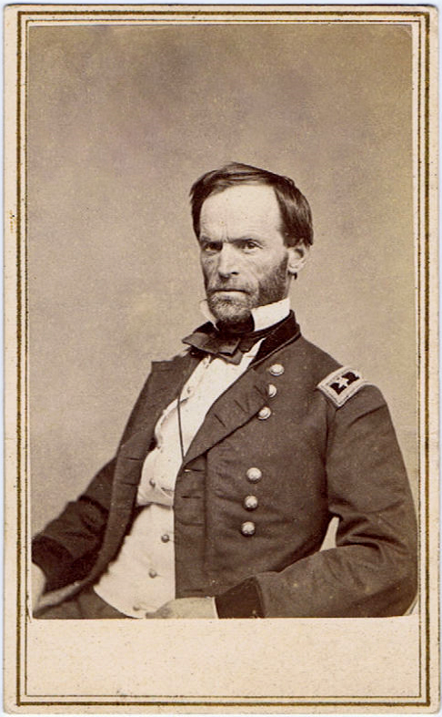

Directions: Work through the five stations in order. Each station holds one record of the war's ending: the president's verdict on the war's cause, an enslaved woman asking whether she was free, the women who petitioned slavery into an amendment, the Congress that chartered farms while armies fought, and the general who wrote that war is cruelty. At each station, state what the war had settled and what it had left standing. At the end, judge the Second Inaugural's verdict from the file.
Source: Abraham Lincoln, Second Inaugural Address, March 4, 1865, as carried in the audited TPSP record (Abraham Lincoln, 'Second Inaugural Address,' 1865 (Avalon Project, Yale Law School).). The address is printed in full, as the record carries it.
"Fellow-Countrymen:"
"At this second appearing to take the oath of the Presidential office there is less occasion for an extended address than there was at the first. Then a statement somewhat in detail of a course to be pursued seemed fitting and proper. Now, at the expiration of four years, during which public declarations have been constantly called forth on every point and phase of the great contest which still absorbs the attention and engrosses the energies of the nation, little that is new could be presented. The progress of our arms, upon which all else chiefly depends, is as well known to the public as to myself, and it is, I trust, reasonably satisfactory and encouraging to all. With high hope for the future, no prediction in regard to it is ventured."
"On the occasion corresponding to this four years ago all thoughts were anxiously directed to an impending civil war. All dreaded it, all sought to avert it. While the inaugural address was being delivered from this place, devoted altogether to saving the Union without war, insurgent agents were in the city seeking to destroy it without war--seeking to dissolve the Union and divide effects by negotiation. Both parties deprecated war, but one of them would make war rather than let the nation survive, and the other would accept war rather than let it perish, and the war came."
"One-eighth of the whole population were colored slaves, not distributed generally over the Union, but localized in the southern part of it. These slaves constituted a peculiar and powerful interest. All knew that this interest was somehow the cause of the war. To strengthen, perpetuate, and extend this interest was the object for which the insurgents would rend the Union even by war, while the Government claimed no right to do more than to restrict the territorial enlargement of it. Neither party expected for the war the magnitude or the duration which it has already attained. Neither anticipated that the cause of the conflict might cease with or even before the conflict itself should cease. Each looked for an easier triumph, and a result less fundamental and astounding. Both read the same Bible and pray to the same God, and each invokes His aid against the other. It may seem strange that any men should dare to ask a just God's assistance in wringing their bread from the sweat of other men's faces, but let us judge not, that we be not judged. The prayers of both could not be answered. That of neither has been answered fully. The Almighty has His own purposes. "Woe unto the world because of offenses; for it must needs be that offenses come, but woe to that man by whom the offense cometh." If we shall suppose that American slavery is one of those offenses which, in the providence of God, must needs come, but which, having continued through His appointed time, He now wills to remove, and that He gives to both North and South this terrible war as the woe due to those by whom the offense came, shall we discern therein any departure from those divine attributes which the believers in a living God always ascribe to Him? Fondly do we hope, fervently do we pray, that this mighty scourge of war may speedily pass away. Yet, if God wills that it continue until all the wealth piled by the bondsman's two hundred and fifty years of unrequited toil shall be sunk, and until every drop of blood drawn with the lash shall be paid by another drawn with the sword, as was said three thousand years ago, so still it must be said "the judgments of the Lord are true and righteous altogether.""
"With malice toward none, with charity for all, with firmness in the right as God gives us to see the right, let us strive on to finish the work we are in, to bind up the nation's wounds, to care for him who shall have borne the battle and for his widow and his orphan, to do all which may achieve and cherish a just and lasting peace among ourselves and with all nations."
State the cause of the war as Lincoln names it in the third paragraph, naming the fraction of the population he gives and the interest he says all knew was somehow the cause.
State the judgment the address passes on both sections, naming the offense, the woe given to North and South, and the closing obligation Lincoln lays on the country.
Source: Annie Davis, letter to Abraham Lincoln, Belair, Maryland, August 25, 1864, as carried in the audited TPSP record (Annie Davis, 'Letter from Annie Davis to Abraham Lincoln,' 1864 (National Archives; Freedmen and Southern Society Project transcription).). The letter is printed in full, in Davis's own spelling, as the record carries it.
"Belair [Md.] Aug 25th 1864"
"Mr president It is my Desire to be free. to go to see my people on the eastern shore. my mistress wont let me you will please let me know if we are free. and what i can do. I write to you for advice. please send me word this week. or as soon as possible and oblidge."
"Annie Davis"
State what Davis asks the president, naming where she wants to go, who will not let her, and the two things she asks him to tell her.
State what this letter measures about the war's settlements by August 1864, naming the document whose limits left her question open and the state whose law still held her.
Source: Women's Loyal National League, "To the Women of the Republic," 1864, as carried in the audited TPSP record (Women's Loyal National League, 'To the Women of the Republic,' 1864 (DocsTeach; punctuation modernized).). Cuts are marked with ellipses, as the record carries them.
"[...] We ask you to sign and circulate this petition for the entire abolition of Slavery. We have now one hundred thousand signatures, but we want a million before Congress adjourns. Remember the President's Proclamation reaches only the Slaves of Rebels. The jails of LOYAL Kentucky are to-day "crammed" with Georgia, Mississippi and Alabama slaves, advertised to be sold for their jail fees "according to LAW," precisely as before the war!!! While slavery exists anywhere there can be freedom nowhere. There must be a law abolishing Slavery. We have undertaken to canvass the Nation for freedom. Women, you cannot vote or fight for your country. Your only way to be a power in the Government is through the exercise of this, one, sacred, Constitutional "right of Petition;" and we ask you to use it now to the utmost. Go to the rich, the poor, the high, the low, the soldier, the civilian, the white, the black - gather up the names of all who hate slavery - all who love liberty, and would have it the law of the land - and lay them at the feet of Congress, your silent but potent vote for human freedom guarded by law."
"You have shown true courage and self-sacrifice from the beginning of the war. You have been angels of mercy to our sick and dying soldiers in camp and hospital, and on the battle-field. But let it not be said that the women of the Republic, absorbed in ministering to the outward alone, saw not the philosophy of the revolution through which they passed; understood not the moral struggle that convulsed the nation - the irrepressible conflict between liberty and slavery. Remember the angels of mercy and justice are twin sisters, and ever walk hand in hand. While you give yourselves so generously to the Sanitary and Freedmen's Commissions, forget not to hold up the eternal principles on which our Republic rests. Slavery once abolished, our brothers, husbands and sons will never again, for its sake, be called to die on the battle-field, starve in rebel prisons, or return to us crippled for life; but our country free from the one blot that has always marred its fair escutcheon, will be an example to all the world that "righteousness exalteth a nation.""
"The God of Justice is with us, and our word, our work - our prayer for Freedom - will not, cannot be in vain."
"E. CADY STANTON, President."
"Susan B. Anthony, Secretary W. L. N. League [...]"
State the address's argument about the Proclamation, naming the place it says the Proclamation reaches only, and the jails it names as its evidence.
State the weapon the address claims for women, naming the right it calls sacred and constitutional, the number of signatures it reports, and the number it wants before Congress adjourns.
Source: United States Congress, Homestead Act, section 1, May 20, 1862, as carried in the audited TPSP record (U.S. Congress, 'Homestead Act,' 1862 (transcribed from the enrolled act; Kansas State History transcript).). The section is printed as the record carries it.
"Be it enacted by the Senate and House of Representatives of the United States of America in Congress assembled, That any person who is the head of a family, or who has arrived at the age of twenty-one years, and is a citizen of the United States, or who shall have filed his declaration of intention to become such, as required by the naturalization laws of the United States, and who has never borne arms against the United States Government or given aid and comfort to its enemies, shall, from and after the first January, eighteen hundred and sixty-three, be entitled to enter one quarter section or a less quantity of unappropriated public lands, upon which said person may have filed a preemption claim, or which may, at the time the application is made, be subject to preemption at one dollar and twenty-five cents, or less, per acre; or eighty acres or less of such unappropriated lands, at two dollars and fifty cents per acre, to be located in a body, in conformity to the legal subdivisions of the public lands, and after the same shall have been surveyed: Provided, That any person owning and residing on land may, under the provisions of this act, enter other land lying contiguous to his or her said land, which shall not, with the land so already owned and occupied, exceed in the aggregate one hundred and sixty acres."
State who may claim land under section 1, naming the age or family condition, the citizenship condition, and the loyalty condition the section sets.
State what the claimant may enter, naming the largest quantity in acres and the price limit the section sets, and state what this statute shows about the Union government in 1862.
Source: William Tecumseh Sherman, letter to James M. Calhoun, Mayor, E. E. Rawson and S. C. Wells, representing the City Council of Atlanta, September 12, 1864, in the Wikisource transcription of the letter, fetched and verified for this lesson. Cuts are marked with ellipses and disclosed here; the paragraphs printed are complete paragraphs of the letter as the transcription carries them.
"You cannot qualify war in harsher terms than I will. War is cruelty, and you cannot refine it; and those who brought war into our country deserve all the curses and maledictions a people can pour out. I know I had no hand in making this war, and I know I will make more sacrifices to-day than any of you to secure peace. But you cannot have peace and a division of our country. If the United States submits to a division now, it will not stop, but will go on until we reap the fate of Mexico, which is eternal war."
"You might as well appeal against the thunder-storm as against these terrible hardships of war. They are inevitable, and the only way the people of Atlanta can hope once more to live in peace and quiet at home, is to stop the war, which can only be done by admitting that it began in error and is perpetuated in pride."
"We don't want your negroes, or your horses, or your houses, or your lands, or any thing you have, but we do want and will have a just obedience to the laws of the United States. That we will have, and, if it involves the destruction of your improvements, we cannot help it."

State Sherman's definition of war in the letter's own words, and state the one thing he says Atlanta's people can do to live in peace and quiet at home again.
State what Sherman says the United States does not want, naming three items from his list, and state the one thing he says it will have, even at the cost of destruction.
For each record, state what the war had settled by its evidence, and what it had left standing, in one sentence grounded in the station.
| Station | What the war had settled | What it had left standing |
|---|---|---|
| Station 1: Second Inaugural | ||
| Station 2: Annie Davis's letter | ||
| Station 3: The League address | ||
| Station 4: The Homestead Act | ||
| Station 5: Sherman's Atlanta letter |
Close the file with a verdict. Judge whether the Second Inaugural is right that the war was slavery's punishment, or whether it was a political failure's last resort. Answer from at least two stations, and answer the strongest claim against your verdict that this file supports.
State the cause as Lincoln names it. One eighth of the whole population were colored slaves, localized in the southern part of the Union. These slaves constituted a peculiar and powerful interest, and all knew that this interest was somehow the cause of the war. To strengthen, perpetuate, and extend it was the object for which the insurgents would rend the Union even by war.
State the judgment on both sections. American slavery is the offense, and the terrible war is the woe due to those by whom the offense came, given to both North and South together. The prayers of both could not be answered, and neither has been answered fully. The closing obligation is to strive on to finish the work, with malice toward none and charity for all, to bind up the nation's wounds and care for the soldier, his widow, and his orphan.
State what Davis asks. It is her desire to be free, to go to see her people on the Eastern Shore. Her mistress will not let her. She asks the president to let her know if we are free, and what she can do, and asks for word this week or as soon as possible.
State what the letter measures. Twenty months after the Emancipation Proclamation, an enslaved woman in Maryland, a loyal border state the Proclamation had not named, still did not know whether she was free, because Maryland law still held her. The letter measures the settlement at its edge. Maryland abolished slavery by its own new constitution in November 1864, after she wrote.
State the argument about the Proclamation. The President's Proclamation reaches only the slaves of rebels. The jails of loyal Kentucky, the address charges, are crammed with slaves from Georgia, Mississippi, and Alabama, advertised to be sold for their jail fees according to law, precisely as before the war. While slavery exists anywhere, there can be freedom nowhere, so there must be a law abolishing slavery.
State the women's weapon. Women cannot vote or fight for their country, so their one way to be a power in the government is the sacred constitutional right of petition. The League reports one hundred thousand signatures and wants a million before Congress adjourns.
State who may claim. Any person who is the head of a family, or who has arrived at the age of twenty one years, and is a citizen of the United States, or has filed a declaration of intention to become one, and who has never borne arms against the United States government or given aid and comfort to its enemies.
State what may be entered, and the showing. One quarter section or less of unappropriated public lands subject to preemption at one dollar and twenty five cents or less per acre, a quarter section being 160 acres. The statute shows a wartime Congress with the seceded states absent chartering the settlement of the West at the same time its armies fought, giving away land the government claimed, land taken from Native nations.
State the definition, and the one way home. War is cruelty, and you cannot refine it. The only way the people of Atlanta can hope once more to live in peace and quiet at home is to stop the war, which can only be done by admitting that it began in error and is perpetuated in pride.
State what the United States does not want, and the one thing it will have. Sherman lists your negroes, your horses, your houses, your lands, or any thing you have (any three). What the United States wants and will have is a just obedience to the laws of the United States, and if it involves the destruction of your improvements, we cannot help it.
Station 1 settled slavery as the war's named cause and the war as its judgment, and left standing the work of binding up wounds, which the address assigns but does not perform. Station 2 settled nothing for its writer by August 1864, and left standing slavery in the loyal border states until Maryland acted that November. Station 3 settled that proclamation alone could not finish slavery, and left standing the amendment campaign the petition was built to drive. Station 4 settled the legal terms on which settlers could claim 160 acres, and left standing the question of the Native nations whose land was claimed. Station 5 settled that the Union would be restored by force and its laws obeyed, and left standing Atlanta's civilians, ordered out of their city. Closing verdicts earn full credit when they answer from at least two stations and meet the strongest counterclaim. A punishment verdict must answer Davis and the League, whose records show the punishment falling unevenly and freedom arriving incompletely. A political failure verdict must answer Lincoln's own naming of slavery as the cause and Sherman's insistence that division, once admitted, would not stop. A verdict using one station only earns partial credit.